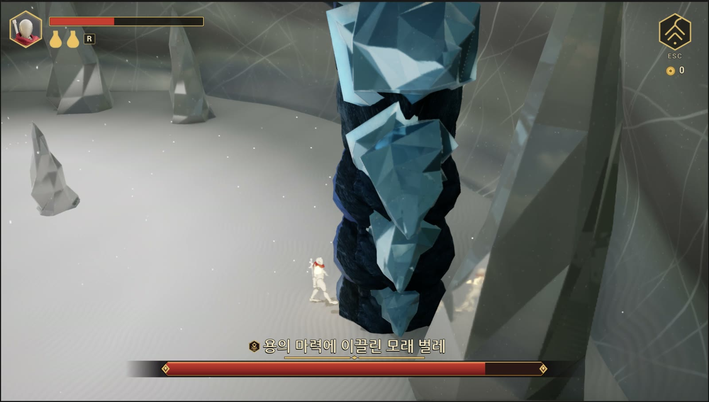

- 엔진
- Unreal Engine 5
- 기간
- 2026.10.23 ~ 개발 중 · 개인 작업
- 범위
- 인트로 · 첫 부락 · 세 갈래 · 참룡산맥 · 결정화 사막 · 엔딩(예정) / 비통한 숲 제외
- 역할
- 기획·동선·배치 판정 직접 / 구현은 AI 세션 10개 이상
플레이 영상 준비 중
개발 중인 빌드를 녹화해 올릴 예정입니다.
오픈월드 전체 루트
세 갈래 길에서 세 지역이 한눈에 보이고, 지하 길은 참룡산맥의 성당으로 모입니다. 지역마다 보스를 쓰러뜨리고 재물 하나를 얻어, 셋을 모아 성당에 바치면 엔딩입니다. 비통한 숲은 이번 범위에서 빼고 들어가는 길만 표시했습니다.
| 인트로 | 구름 위에서 깨어나 위습을 따라 낙하하고, 위습을 잡고 활공해 해변 캠프에 내립니다. 약 40초 안에 이동과 활공 조작을 하나씩 익힙니다. |
| 첫 부락 | 몹 무리 셋 → 스위치 셋 → 봉인 철문 순서로 지나갑니다. 전투와 탐험의 기본 흐름을 짧게 반복합니다. |
| 세 갈래 | 철문을 열면 세 지역이 한눈에 보이고, 세 길이 처음부터 모두 열려 있습니다. 왼쪽은 결정화 사막, 가운데는 참룡산맥, 오른쪽은 비통한 숲이며, 순서는 플레이어가 고릅니다. |
| 참룡산맥 (가운데) | 갈비뼈 쉼터 → 나무 승강대 → 거대한 검의 코등이(바람이 세서 활공 금지) → 뼈 승강기 → 검 앞 지하 동굴 → 보스 광장 → 지하 성당에서 ‘용의 피’를 얻습니다. 성당은 지하 길의 중심으로, 서쪽 메아리 문은 사막 지하로, 동쪽 동굴은 비통한 숲 깊은 곳으로 이어집니다. |
| 결정화 사막 (왼쪽) | 미끄러워 오를 수 없고 눈부심 때문에 활공도 짧은 가시 산 미로를 지나, 모래 구덩이로 지하에 내려갑니다. 성당의 메아리 문으로도 들어올 수 있습니다. 지하 공동에서 보스 ‘모래 벌레’를 쓰러뜨리고 보상방에서 ‘불의 원석’을 얻은 뒤, 순간이동 장치로 땅 위 입구나 성당 근처 터널로 돌아갑니다. |
| 비통한 숲 (오른쪽) | 이번 범위에서 뺐습니다. 세 갈래 오른쪽 땅 위 길이나 성당 동쪽 동굴로 늪 입구까지 갈 수 있고, 늪 입구는 참룡산맥에서 얻은 ‘용의 피’가 있어야 지나갑니다. |
| 엔딩 (예정) | 세 지역에서 얻은 재물 셋을 성당에 바쳐 문이 열리면, 용의 입에서 안개가 걷히며 참룡성채가 모습을 드러내고 끝납니다. |
같은 조작, 지역마다 다른 규칙
| 놀이 | 첫 부락 | 참룡산맥 | 결정화 사막 |
| 활공 | 인트로와 짧은 이동 | 검 위는 바람이 세서 금지 (엔딩 뒤 해금) | 가시 산 사이 짧은 활공 (눈부심 때문에 오래 못 떠 있음) |
| 등반 | 망루와 계단 | 등뼈와 갈비뼈 오르기 | 가시 산은 미끄러워 못 오름 → 미로를 걸어서 풂 |


개발 중 화면
2026년 11월 빌드와 시험장 화면입니다. 계속 바뀌는 중입니다.


AI 스튜디오로 만드는 방식
게임의 방향과 판정은 제가 하고, 구현은 역할을 나눈 AI 세션들이 맡습니다.
| 지휘 | 헤드 세션 하나가 시스템·레벨·캐릭터·VFX·QA 세션에 일을 나누고, 저는 디렉터로서 기획 의도와 합격 기준을 정합니다. |
| 직접 | 동선·배치·연출 판정과 빌드를 직접 플레이하는 QA를 맡습니다. 지금은 11번째 빌드로 QA 중입니다. |
| AI로 직접 만든 도구 | 탐험 지점을 PCG로 자동 배치하는 플러그인, 빌드를 켜서 오류·경고를 한 번에 세는 검사 도구, 동선에서 15초 넘게 비는 구간을 찾는 페이싱 검사, 보스 주위를 360도로 돌며 찍어 모션 캡처 장비 역할을 하는 촬영 스튜디오. |
| 검수 | 만든 AI가 아닌 다른 모델이 교차 검수하고, 고칠 곳은 붉은 원을 친 스크린샷으로 짚습니다. |
| 규모 | 시작한 지 약 한 달, 커밋 1만 2천여 개 |